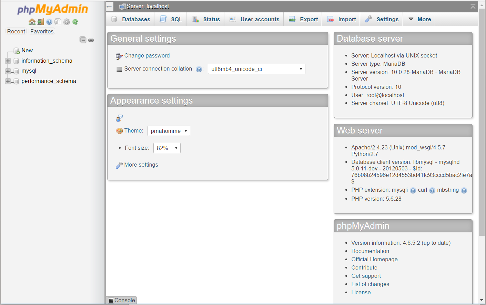
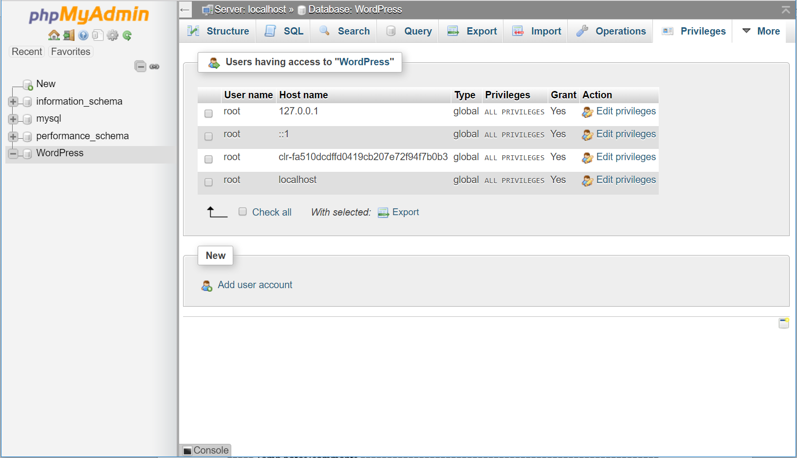

Set up a LAMP web server on Clear Linux* OS
This tutorial provides instructions on how to set up a LAMP web server on Clear Linux* OS and how to use phpMyAdmin* to manage an associated database. Note that this tutorial installs MariaDB*, which is a drop-in replacement for MySQL*.
In order to create a web server using Clear Linux OS as the host OS, your host system must be running Clear Linux OS. This tutorial assumes you have installed Clear Linux OS on your host system. For detailed instructions on installing Clear Linux OS on a bare metal system, visit Install Clear Linux* OS from the live desktop.
This tutorial covers:
Install Apache
Apache is an open source HTTP web server application that can run on several operating systems, including Clear Linux OS. Go to the Apache HTTP Server Project for more information.
Install the web-server-basic bundle
The web-server-basic bundle contains the packages needed to install the Apache software bundle on Clear Linux OS.
Note
Before you install new packages, update the Clear Linux OS with the following console command:
sudo swupd update
To install the bundle, enter the following command:
sudo swupd bundle-add web-server-basic
To start the Apache service, enter the following commands:
sudo systemctl enable httpd.service sudo systemctl start httpd.serviceTo verify that the Apache server application is running, open a web browser and navigate to: http://localhost.
If the service is running, a confirmation message will appear, similar to the message shown in figure 1.

Figure 1: Confirmation that the Apache service is running.
Note
The
index.htmlfile is located in the/var/www/htmldirectory of your host system. You will copy this file into a new location after you modify the configuration in the next step.
Change the default configuration and data directory
Clear Linux OS is designed to be a Stateless operating system which means that you
must create an optional configuration file to override the default values.
The default location of the Apache configuration file, httpd.conf,
is located in the /usr/share/defaults/httpd directory. Clear Linux OS can
override this directory as part of the stateless paradigm. This default
.conf file includes the following directives that allow for additional
locations of configuration definitions:
# Virtual hosts
IncludeOptional /usr/share/defaults/httpd/conf.d/*.conf
IncludeOptional /usr/share/defaults/httpd/conf.modules.d/*.conf
IncludeOptional /etc/httpd/conf.d/*.conf
IncludeOptional /etc/httpd/conf.modules.d/*.conf
In this section you will define your own httpd.conf file to override the default values, and define a custom DocumentRoot for your web server.
Create the directory structure for
/etc/httpd/conf.d.sudo mkdir -p /etc/httpd/conf.d
Create and open the
httpd.conffile in your new/etc/httpd/conf.ddirectory.sudo nano /etc/httpd/conf.d/httpd.conf
Add the
DocumentRootvariable tohttpd.conf. Copy the content listed below into the new/etc/httpd/conf.d/httpd.conffile.# # Set a new location for DocumentRoot # DocumentRoot "/var/www/tutorial" # # Relax access to content within /var/www/tutorial for this example # <Directory "/var/www/tutorial"> AllowOverride none Require all granted </Directory>
Create a new
DocumentRootdirectory structure and copy theindex.htmlfile from/var/www/htmldirectory to/var/www/tutorial.sudo mkdir –p /var/www/tutorial cd /var/www/tutorial sudo cp /var/www/html/index.html .To ensure a successful setup, edit the new
index.htmlfile with an obvious change.sudo nano index.html
For example, we changed the default message
“It works!”
to
“It works from its new location!”
Stop and then restart
httpd.service.sudo systemctl stop httpd.service sudo systemctl start httpd.service
Go to http://localhost to view the new screen. You should see your updated default message from step 5.
Change the configuration back to the default
/var/www/htmllocation. To do this, edit the/etc/httpd/conf.d/httpd.conffile again and replace any instance of /var/www/tutorial with /var/www/html.sudo nano /etc/httpd/conf.d/httpd.conf
Stop and then restart
httpd.service.sudo systemctl stop httpd.service sudo systemctl start httpd.service
Go to http://localhost and verify that you can see the default screen again.
Optionally, remove the /var/www/tutorial directory you previously created.
sudo rm /var/www/tutorial/index.html sudo rmdir /var/www/tutorial
Install PHP
An Apache installation allows you to display static web pages. Enabling PHP allows you to generate and display dynamic web pages. To add this functionality to your web server, install PHP on your system.
To get the php components, enter the following command:
sudo swupd bundle-add php-basic
To enable PHP, enter the following commands:
sudo systemctl enable php-fpm.service sudo systemctl start php-fpm.service sudo systemctl restart httpd.serviceAfter restarting the Apache service, test your PHP installation.
Create and open a file named
phpinfo.phpin the/var/www/html/directory using a text editor.sudo nano /var/www/html/phpinfo.php
Add the following line to the file:
<?PHP phpinfo() ?>
Go to http://localhost/phpinfo.php.
Verify that the PHP information screen appears, similar to figure 2:

Figure 2: The PHP information screen.
If the PHP information screen is displayed, you have successfully installed the PHP components and are now ready to add your database application to complete your LAMP server implementation.
Install MariaDB
Install MariaDB to store content. MariaDB is a drop-in replacement for MySQL and is available in the database-basic Clear Linux OS bundle.
To install the database-basic bundle, enter the following command:
sudo swupd bundle-add database-basic
To start MariaDB after it is installed, enter the following commands:
sudo systemctl enable mariadb sudo systemctl start mariadbTo check the status of MariaDB, enter the following command:
sudo systemctl status mariadb
Press Ctrl + c or q to exit.
Security hardening
With the MariaDB service running, we can perform some basic security hardening.
To add a basic layer of security, enter the following command:
sudo mysql_secure_installation
Respond to the questions that appear in the script below.
Note
Our suggested responses follow each question.
Enter current password for root (enter for none):
In order to secure MariaDB, we need the current password for the root user. For a newly installed MariaDB without a set root password, the password is blank. Thus, press enter to continue.
OK, successfully used password, moving on... Set root password? [Y/n]
Set the root password to prevent unauthorized MariaDB root user logins. To set a root password, type ‘y’.
New password:
Type the desired password for the root user.
Re-enter new password:
Re-type the desired password for the root user.
Password updated successfully! Reloading privilege tables.. ... Success! Remove anonymous users? [Y/n]
By default, a MariaDB installation includes an anonymous user that allows anyone to log in to MariaDB without a user account. This anonymous user is intended only for testing and for a smoother installation. To remove the anonymous user and make your database more secure, type ‘y’.
... Success! Disallow root login remotely? [Y/n]
Normally, root should only be allowed to connect from the ‘localhost’. This ensures that someone cannot guess the root password from the network. To block any remote root login, type ‘y’.
... Success! Remove test database and access to it? [Y/n]
By default, MariaDB includes a database named ‘test’ which anyone can access. This database is also intended only for testing and should be removed. To remove the test database, type ‘y’.
- Dropping test database... ... Success! - Removing privileges on test database... ... Success! Reload privilege tables now? [Y/n]
Reloading the privilege tables ensures all changes made so far take effect immediately. To reload the privilege tables, type ‘y’.
... Success! Cleaning up...
All done! If you’ve completed all of the above steps, your MariaDB installation should now be secure.
Thanks for using MariaDB!
The MariaDB installation is complete, and we can now install phpMyAdmin to manage the databases.
Install phpMyAdmin
The web-based tool phpMyAdmin is a straightforward way to manage MySQL or MariaDB databases. Visit the phpMyAdmin website for the complete discussion regarding phpMyAdmin, its documentation, the latest downloads, and other useful information.
In this tutorial, we use the latest English version of phpMyAdmin.
Download the
phpMyAdmin-<version>-english.tar.gzfile to your~/Downloadsdirectory. Here, <version> refers to the current version available at https://www.phpmyadmin.net/downloads.Note
This example downloads and uses version 4.6.4.
Once the file has been successfully downloaded and verified, decompress the file and directories into the Apache web server document root directory. Use the following commands:
cd /var/www/html sudo tar –xzvf ~/Downloads/phpMyAdmin-4.6.4-english.tar.gzTo keep things simple, rename the newly created
phpMyAdmin-4.6.4-englishdirectory tophpMyAdminwith the following command:sudo mv phpMyAdmin-4.6.4-english phpMyAdmin
Use phpMyAdmin to manage a database
You can use the phpMyAdmin web-based tool to manage your databases. Follow the steps below for setting up a database called “WordPress”.
Verify that a successful installation of all LAMP server components by going to http://localhost/phpMyAdmin. See figure 3.
Log in with your root userid and the password you set up when you ran the mysql_secure_installation command. Enter your credentials and select Go to log in:

Figure 3: The phpMyAdmin login page.
Verify a successful login by confirming that the main phpMyAdmin page displays, as shown in figure 4:
Figure 4: The phpMyAdmin dashboard.
Set up a database by selecting the Databases tab, as shown in figure 5.
Enter WordPress in the text field below the Create database label.
Select the utf8_unicode_ci option from the Collation drop-down menu beside the text field.
Click Create.

Figure 5: The Databases tab.
Set up user permissions by selecting the WordPress database located in the left panel. See figure 6.
Select the Privileges tab. Figure 6 shows its contents.
Figure 6: The Privileges tab.
Click Add user account located at the bottom of the Privileges tab. The Add user account page appears, as shown in figure 7.

Figure 7: The User accounts tab.
Enter the following information in the corresponding fields that appear in figure 7 above:
- User name: wordpressuser
- Password: wp-example
- Re-type: wp-example
In the Database for user account section, select Grant all privileges on database “WordPress”.
At the bottom of the page, click Go.
{kind=link}
{kind=link}
If successful, you should see the screen shown in figure 8:
{kind=link}
Congratulations!
You have now created a fully functional LAMP server along with a WordPress*-ready database using Clear Linux OS.
Next steps
Next, add the WordPress components needed to host a WordPress website with Set up WordPress* on a LAMP web server.